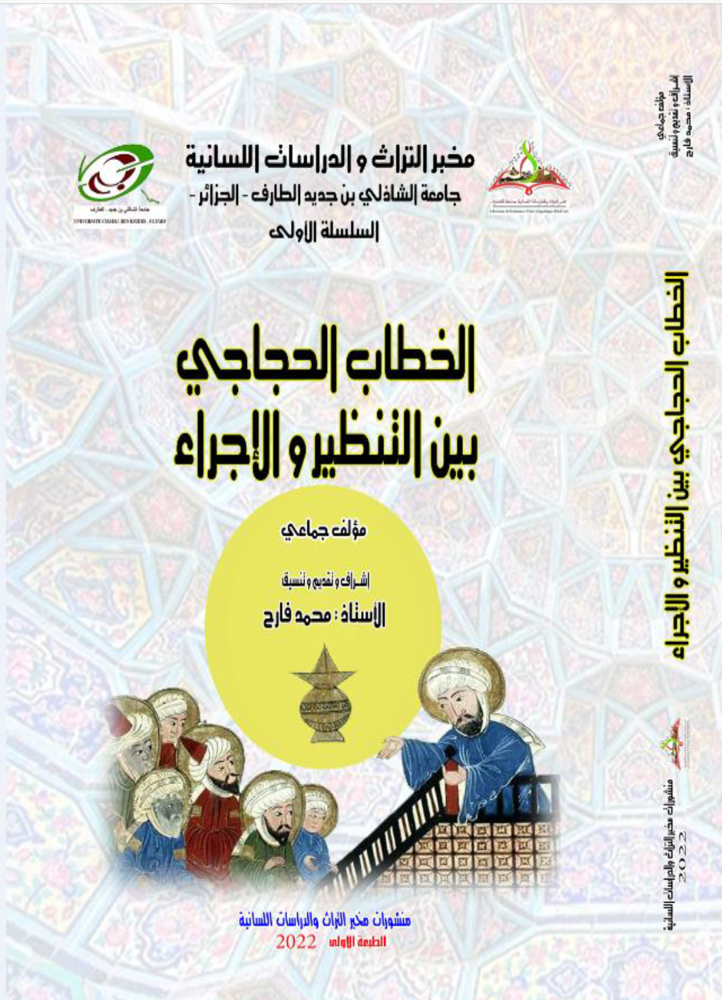

المؤلفات والمنشورات

الخطاب الحجاجي بين التنظير والإجراء
دراسة متعمقة في كيفية بناء الخطاب وتأثير الآليات الحجاجية في تشكيل النصوص الثقافية والسياسية.
تحميل
أدب الرحلة وجدلية الآخر
إن أدب الرحلة أدب يزخر بتنوع ثقافي كبير جدا، فهو يحمل في ثناياه قيمة حضارية وثقافية وتاريخية، فالرحالة يقدم لنا من خلال توصيف الأماكن التي يحط بها والمدن التي يزورها ثقافات متنوعة وعادات متفرقة
تحميل